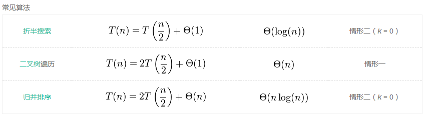

5.28
1.递归次数，取决于递归树，而递归树取决于轴枢的选择。树越平衡，递归次数越少。
而对分区的长短处理顺序，影响的是递归时对栈的使用内存，而不是递归次数
2.常见的优化手段有尾递归，迭代，循环
尾递归：在每一次递归的过程中保持了上一次计算的状态，也就是“线性迭代过程”
尾递归和一般的递归不同在对内存的占用，普通递归创建stack累积而后计算收缩，尾递归只会占用恒量的内存（和迭代一样）
3. 不能根据前序和后序构建一颗二叉树
4.
5.算法的特性：输入输出、有穷性、确定性、可执行性
设计需要：正确性、底耦合高效率低存储、可读性、健壮性
6.开哈希表-------链式地址法
闭哈希表-------开放地址法
开哈与闭哈希区别：
开哈希只会和相同值发生冲突，而闭哈希除了与相同值发生冲突，还会与不同值发生冲突
所以，开哈希不受密度影响，而闭哈希受密度影响
7. 开放定址法:一旦发生冲突，就去寻找下一个空的散列地址，只要散列地址够大，空的地址总会找到 链地址法: 一旦发生冲突，在当前位置给单链表增加结点就行。
与开放定址法相比，拉链法其中优点有：
(1)拉链法处理冲突简单，且无堆积现象，即非同义词决不会发生冲突，因此平均查找长度较短；
(2)由于拉链法中各链表上的结点空间是动态申请的，故它更适合于造表前无法确定表长的情况；
(3)开放定址法为减少冲突，要求装填因子α较小，故当结点规模较大时会浪费很多空间。而拉链法中可取α≥1，且结点较大时，拉链法中增加的指针域可忽略不计，因此节省空间；
(4)在用拉链法构造的散列表中，删除结点的操作易于实现。只要简单地删去链表上相应的结点即可。而对开放地址法构造的散列表，删除结点不能简单地将被删结点的空间置为空，否则将截断在它之后填人散列表的同义词结点的查找路径。这是因为各种开放地址法中，空地址单元(即开放地址)都是查找失败的条件。因此在用开放地址法处理冲突的散列表上执行删除操作，只能在被删结点上做删除标记，而不能真正删除结点。
8.哈希函数的构造方法：①数字分析法
②平方取中法
③除留取余法
④分段叠加法
处理冲突的方法：①开放地址法（包括线性探测法、二次探测法、伪随机探测法）
②链地址法
9. 包含的文件只要是文本文件都可以，可以是.h .c .cpp 等
10.AOV网的应用一般是求拓扑排序 用顶点表示活动，用弧表示活动间的优先关系的有向图称为顶点表 示活动的网（Activity On Vertex Network)
AOE网的应用一般是求关键路径 ,是一个带权的有向无环图，其中，顶点表示事件（Event),弧表示活动，权表示活动持续的时间。（Activity On Edge)
11.Floyd 可以有负权边是因为它依靠的动态规划
Dij算法不能有负权边的原因是它依靠贪心算法
12. 只有无向连通图才有生成树
强连通图必须从任何一点出发都可以回到原处
13.完全二叉树： 若设二叉树的深度为h，除第 h 层外，其它各层 (1~h-1) 的结点数都达到最大个数，第 h 层所有的结点都连续集中在最左边，这就是完全二叉树。
满二叉树： 除最后一层无任何子节点外，每一层上的所有结点都有两个子结点二叉树。 二叉排序树: 1）若左子树不空，则左子树上所有结点的值均小于它的根结点的值； （2）若右子树不空，则右子树上所有结点的值均大于它的根结点的值； （3）左、右子树也分别为二叉排序树
平衡二叉树(AVT):
可以是空树。
假如不是空树，任何一个结点的左子树与右子树都是平衡二叉树，并且高度之差的绝对值不超过1